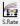
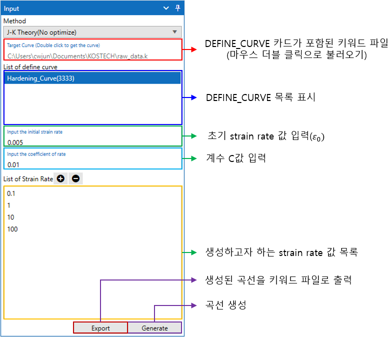

Strain Rate 커브 생성
1. Johnson-Cook (No optimize)
Strain rate 따른 시편 시험 데이터가 존재 않을 경우 static 시험 데이터 만으로 Johnson-Cook 모델을 이용하여 strain rate에 따른 plastic strain-stress 곡선을 생성해 볼 수 있는 기능입니다. 해당 기능으로 생성된 데이터는 실제 시험 데이트를 기반으로 생성된 데이터가 아니기 때문에 신뢰성을 보장하기 어렵다는 점을 고려하여야 합니다.
1.1 입력 패널 UI
LAMP의 상단 아이콘 메뉴에서  클릭하면 입력 패널 UI가 우측에 표시됩니다.

1.2 곡선 생성하기
키워드 파일 불러오기
Target Curve (Double click to get the curve) 입력란을 마우스로 더블 클릭합니다.
LS-Dyna 키워드 파일을 선택합니다.
불러온 키워드 파일에 DEFINE_CURVE가 존재한다면 List of define curve에 목록이 표시됩니다.
생성하고자 하는 strain rate 값 추가 및 삭제
List of Strain Rate에서 + 아이콘을 클릭한 후 생성되는 입력창에 값을 입력합니다.
추가된 항목을 삭제하기 위해서는 삭제하고자 하는 항목을 선택하고 - 아이콘을 클릭합니다.
곡선 생성 및 파일 출력
Initial strain rate와 Coefficient of rate 값을 입력하고 Generate 버튼을 클릭하여 곡선을 생성합니다.
생성된 곡선데이트를 LS-Dyna에서 사용하기 위한 키워드 파일로 생성하기 위해 Export 버튼을 클릭합니다.
저장할 파일명을 입력하고 저장합니다.